| 日付 | 2009年7月26日（日） |
|---|---|
| 山域 | 富士山周辺 |
| メンバー | 単独 |
| 山行形態 | 日帰り |
| アクセス | 電車、バス |
| ルート (Map) | 精進湖入口→富士風穴→大室山→赤池 |
一般的にはあまり知られていないが、富士山麓には多くの寄生火山がある。
その中でも特に大きな大室山に行ってみることにする。
防水機能が0になったので買い換えた、新しい登山靴の足慣らしも兼ねた山行だ。
バスに乗って精進湖入口をめざす。
関東周辺の天気予報は曇や雨だったのに、思いの外晴れている。
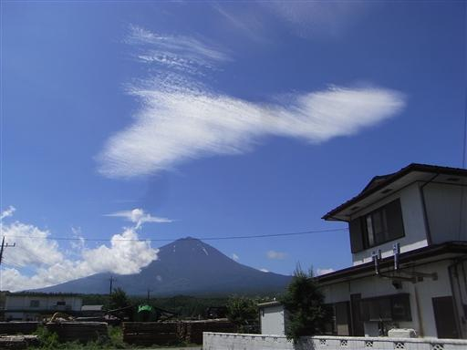
10:11 精進湖入口バス停到着。標高920m。
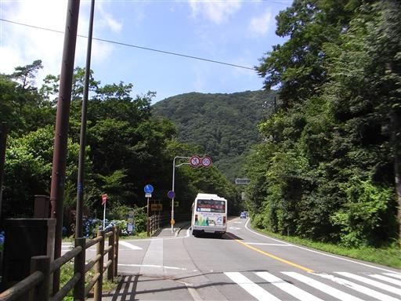
遊歩道入口には説明板が設置されている。
富士山麓の青木ヶ原樹海は前々から歩いてみたいと思っていたところだが、
自殺の名所でもあり、どうも暗いイメージがある。
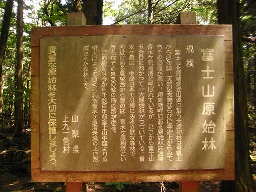
富士山5合目まで続く精進口登山道を歩いていく。
登山道といってもこの辺りは傾斜もなく、完全に遊歩道だ。
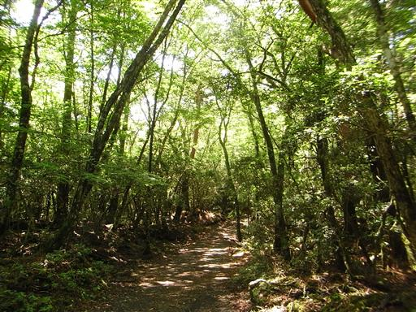
辺りは溶岩流の上にできた森が広がっている。
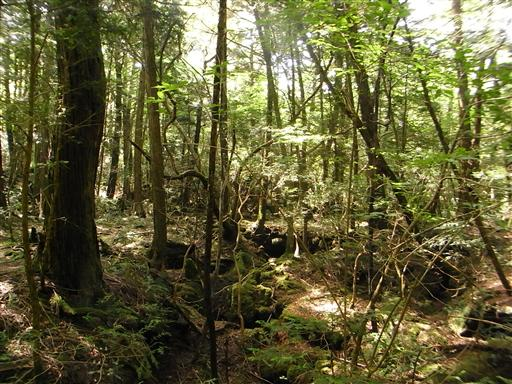
所々で植生が変わって松林などになったりする。
植林されたものなのだろうか？

途中で車道と交差する。
青木ヶ原樹海の大原始林も、車道や遊歩道が網の目のように張り巡らされている。
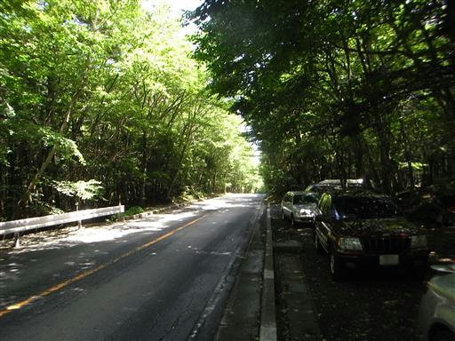
大室山に登る前に富士風穴に寄っていくことにする。
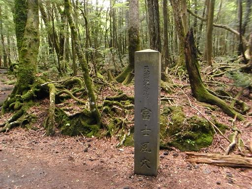
ぽっかりと口をあけた富士風穴。
窪地に足を踏み入れて驚いた。暑くて暑くて汗だくになって歩いてきたのに、
窪地に下りると気温が一気に下がる。
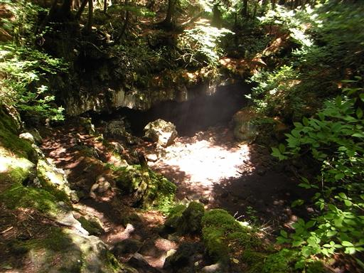
洞窟の中に足を踏み入れる。洞窟内部はさらに気温が低い。
ここは足和田山に登ったときに寄った、富岳風穴や鳴沢氷穴のような観光地ではない。
足元は少々整備されているが、ヘッドライト必須の洞窟だ。
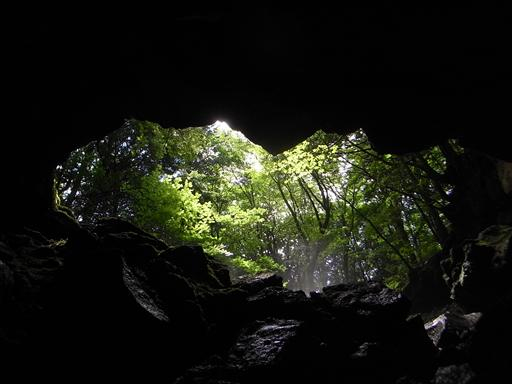
足元は完全に凍りついている。どおりで涼しいはずだ。
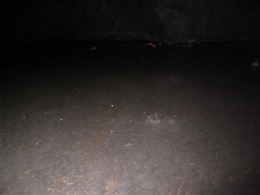
洞窟の奥に行くと、大勢の子供達が集まっている。
自然と触れ合おうツアーのようなものを催行しているらしい。
ガイドのおじさんに聞いてみると、この奥は傾斜があって、
滑り落ちたらロープがないと戻って来れないとのことだった。
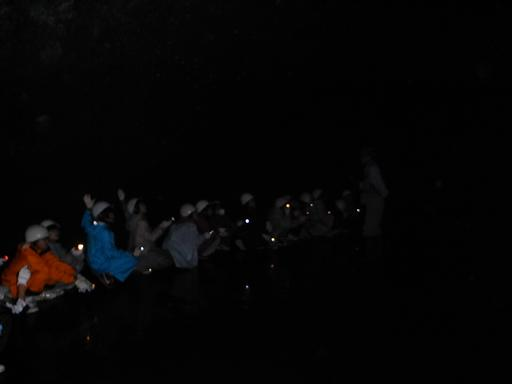
洞窟内部にある氷筍。滴り落ちた雫が凍って筍のような形になる。
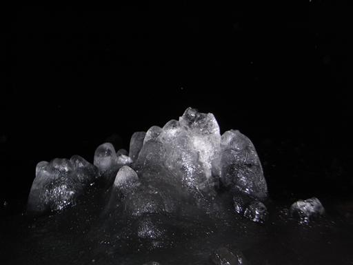
透き通った氷で非常にきれいだ。
子供達が去った後、辺りは完全な静寂と闇に包まれる。
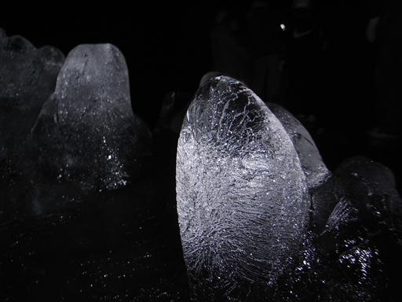
ヘッドライトの灯りを頼りに、洞窟の外に出る。
洞窟内部から吐き出される冷気が立ち上っている。
それにしても洞窟内部は寒かった。
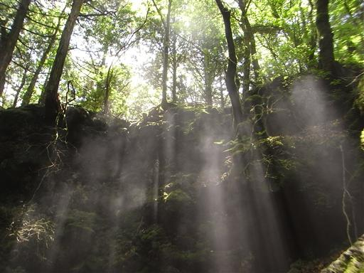
ついでに近くにある大室洞穴にも行ってみることにする。
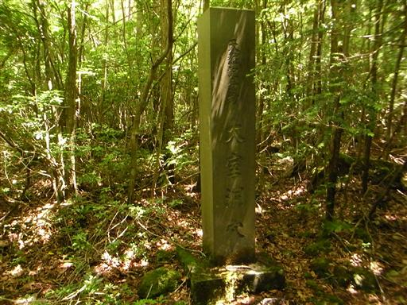
この洞窟は入口付近が崩壊したようで、中に入ることはできなかった。
僅かに開いている穴からは冷気が出ている。
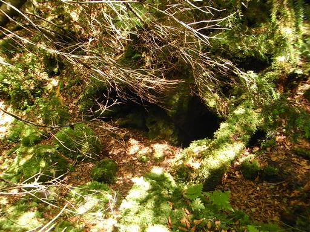
洞窟めぐりは終わりにして大室山に登ることにする。
この山は登山道がないので適当に斜面を登っていく。
標高差は300m程度なので一瞬だ。
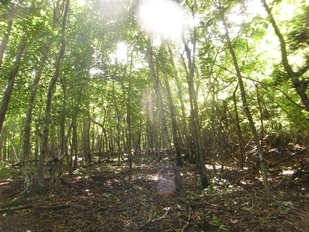
所々で赤テープが見られる。以前に登った人が目印につけたものだろう。
下草はないので、赤テープはあまり気にせず登っていく。
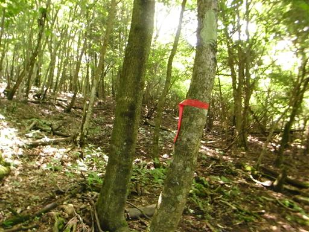
生い茂る樹木の間からは、富士の樹海とその向こうに三ツ峠山などが見える。
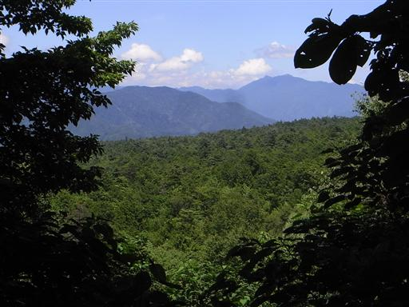
山頂に近づくと笹薮が現れる。青木ヶ原樹海にはなかった植生だ。
笹藪に覆われているところでは踏み跡がはっきりしている。
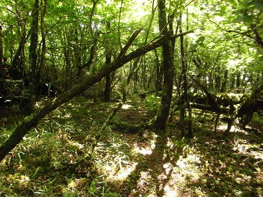
13:18 大室山山頂到着。標高1468m。
展望は全くない。

山頂にはちゃんと山頂標識がある。
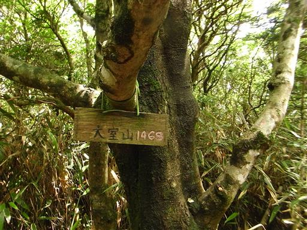
下山は、大室山の北にある本栖風穴に向かって下ることにする。
コンパスをあわせてまっすぐ下っていく。
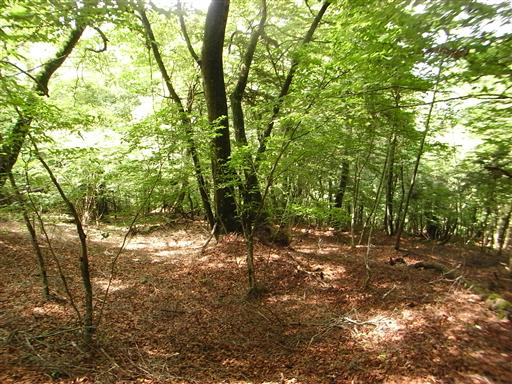
大室山を下ったところで遊歩道らしきものに出会う。
これが本栖風穴に続く道かもしれなかったが、
このときは違う道だと判断して無視して突っ切ってしまった。
ちなみに本栖風穴はロープがないと入洞は不可能らしい。
富士山麓にはそういった洞窟が数多くある。
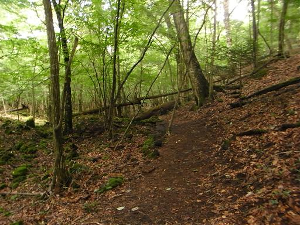
青木ヶ原樹海に足を突っ込む。地面はでこぼこで少々歩きにくい。
1分も歩くと360度同じ景色で、多くの人が恐れを抱くのも良く分かる。
ちなみに青木ヶ原樹海でコンパスが狂うという噂の真偽は不明だ。
場所によっては1～2度ずれるという話も聞くが、いずれにせよ大きく狂うことはない。
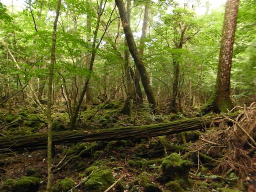
30分ほど歩くと大きな道に合流する。
車道や遊歩道が多いので一方向に向かって歩き続ければ
迷い込んで出られなくなるということは、ほぼありえない。
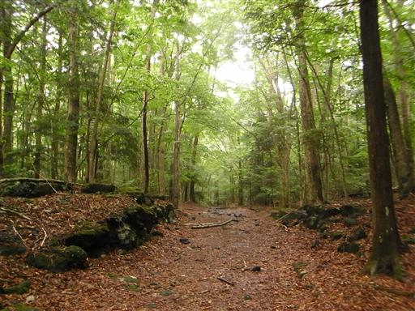
ここから再び精進口登山道を通って、バス停までの長い道のりを歩く。
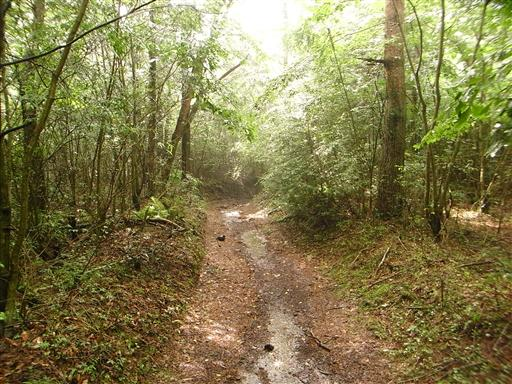
日は差しているのだが、途中から雨が降ってくる。
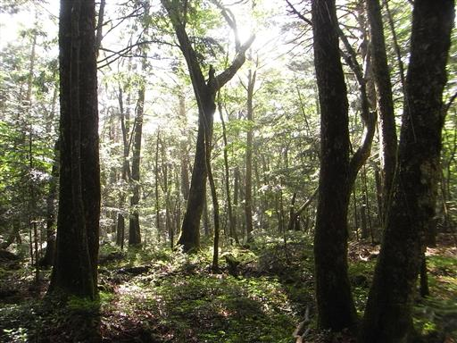
15:36 赤池バス停到着。標高910m。
行きに使った精進湖入口バス停よりこちらのバス停のほうが近かった。
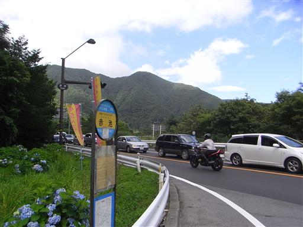
先ほど雨を降らせた雲が見えている。
この辺りは雨が降った形跡はないので、局地的な雨だったのだろう。
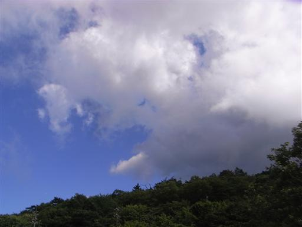
帰りのバスからも、富士山がきれいに見えている。
何度も富士山を見てきたが、夏の姿を見るのは久々だ。
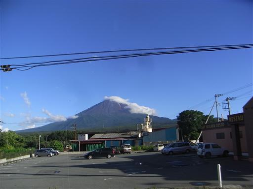